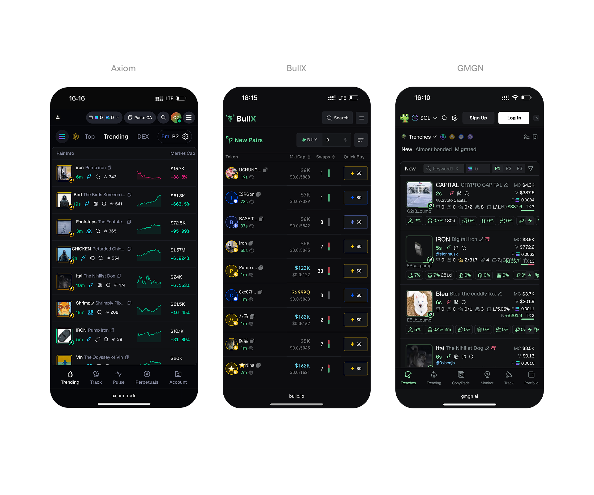
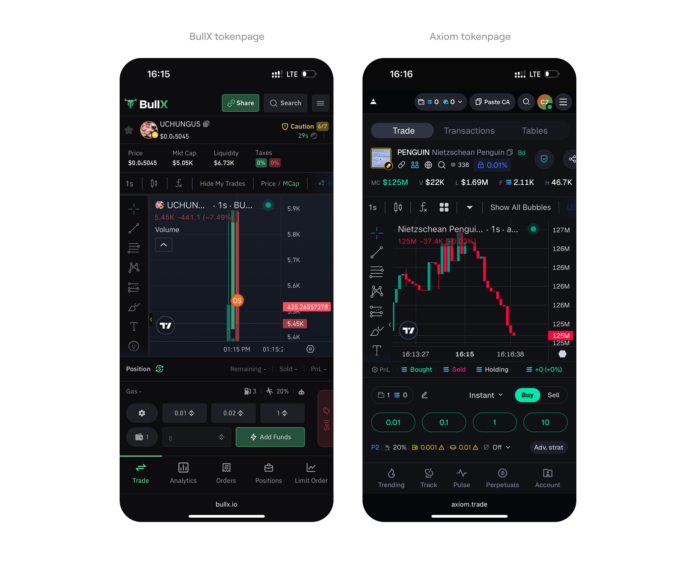
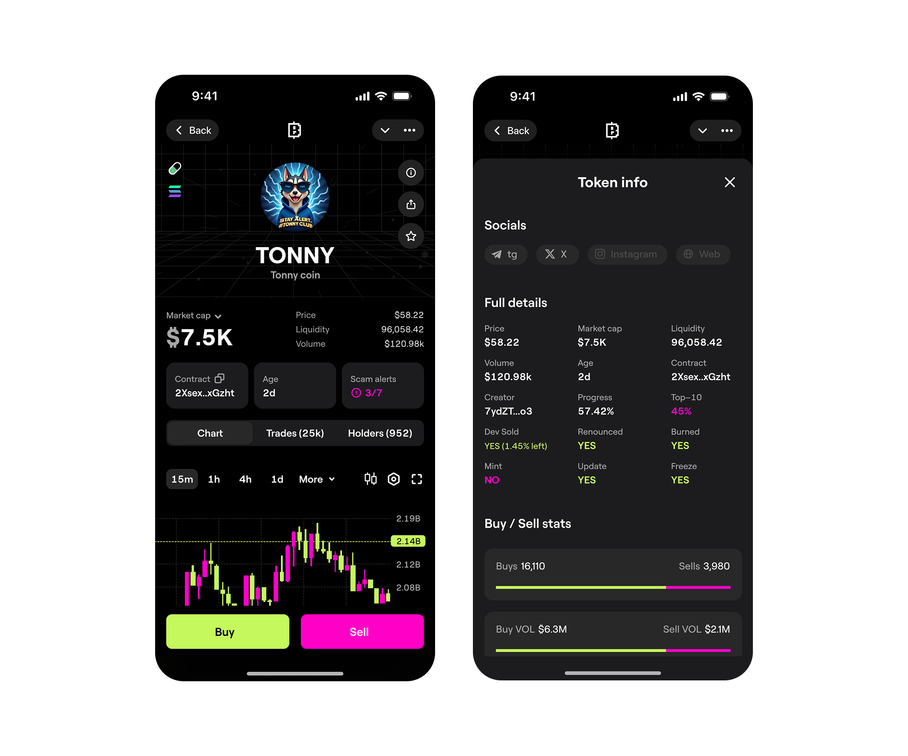
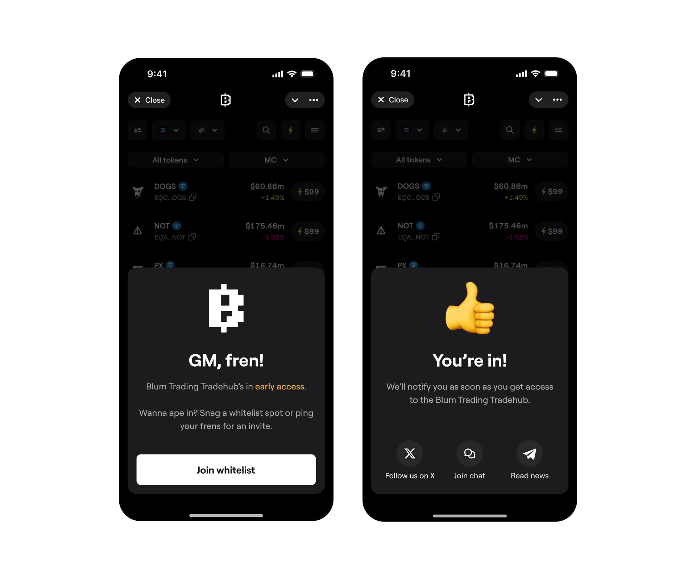

Space Planning is a shelf layout management platform for grocery retail — helping store staff plan and manage product placement with data-driven precision.


Problem
Merchandise placement was managed by untrained staff. The interface didn't guide them — it assumed knowledge they didn't have.

Nobody had a clear standard for shelf planning software.
The product arrived as an MVP assembled without a designer — no component system, no documented logic, no clear interaction patterns. I joined to make it scalable and ship it.

Copying existing shelf planning tools was risky: the market was fragmented, existing tools were built for planners with years of experience — not for store staff who had never opened a similar app.
Based on the existing MVP, the team had assembled screens for the core flows. No components, no styles, no auto-layouts. And no designer.

The stated task: apply a design system, fill edge cases, hand off to development. The real task turned out to be more fundamental than that.

Users don't read instructions — they try things.
The target audience — grocery store office staff — had minimal experience with digital tools. No analytical background. Instructions placed next to a button don't get read.
- 1 The interface teaches through the action itself, not beside it
- 2 Every new flow starts with "what to do next", not "what this is"
So the onboarding wasn't a separate tutorial screen. It was built into the first-run flow as a sequential checklist: register → set up your store → add your first department → place your first product. Each step gated the next.

Alongside onboarding, the AI analytics module removed the biggest manual burden: hours spent cross-referencing what's in stock, what's selling, and what needs repositioning. The platform now surfaces that automatically.

Every screen was designed around the staff member in the store — not a specialist planner at a desk. That meant stripping complexity and surfacing only what mattered for the task at hand.

Final result
The main screen shows current stock levels, product trends, and placement recommendations — all surfaced by the AI module without any manual analysis. Staff act on insight, not on gut feeling.

In one iteration, category managers could expand a department view and edit the planogram inline. Due to technical constraints at the time, full editing moved to a dedicated screen — but the inline preview stayed.

The AI layer connects inventory data, sales trends, and shelf positions. When a new product arrives or an item underperforms, the system flags it and suggests an action — no spreadsheet required.

Before the full rollout, a closed beta was run with real store staff. Each round of feedback sharpened the logic — interactions that seemed obvious in Figma turned out to need rethinking in real hands.

Results
cut by the AI module
onboarded without support
added in seconds by any staff member
Space Planning became an operational tool for real retail staff — not a specialist app. The combination of AI analytics, structured onboarding, and iterative beta testing produced a product accessible to anyone, not just power users.